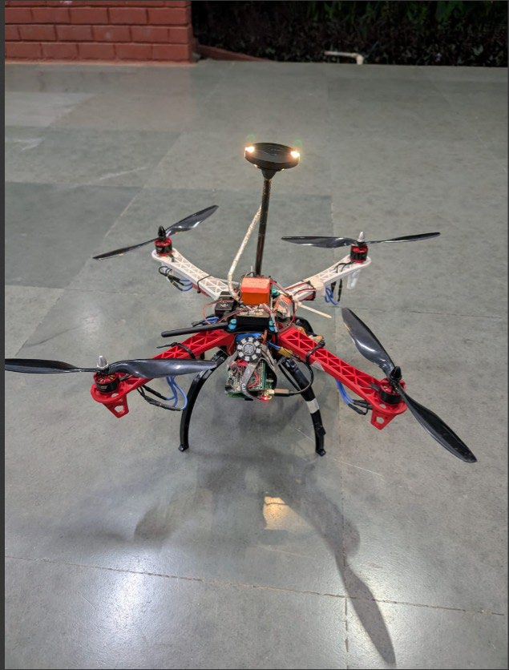

User-Friendly Access & Optimization of Ground Operations for UAS
Project Overview
This project addresses a critical challenge in drone technology: the automation of on-ground operations. Current systems rely heavily on manual intervention for pre-flight checks, mission uploads, and launch sequences, which limits efficiency and scalability, especially for rapid deployment scenarios. Our solution automates these processes, significantly reducing human dependency and operational time.
Problem Statement
The reliance on manual inputs and Ground Control Station (GCS) software for drone mission initiation creates a bottleneck. This dependency on trained personnel and stable data links hampers operational efficiency and makes rapid, repeated deployments in varied environments challenging. The core problem is the lack of a user-friendly, fast, and reliable method to perform pre-flight and launch sequences directly on the field.
My Role & Contribution
As a key team member, I was responsible for the core engineering and development of the system. My contributions included:
- System Architecture: Designed the integration between a Raspberry Pi (as a companion computer) and a Pixhawk flight controller.
- Software Development: Developed Python scripts using the MAVLink protocol to automate mission uploads, pre-flight checks, and arming sequences.
- Hardware Design: Designed and fabricated a custom PCB in KiCad to create a physical user interface with buttons, status LEDs, and a buzzer for clear, immediate feedback.
Key Results & Impact
50% Reduction in Mission Initiation Time
The automated system reduced the time from mission upload to arming from an average of 14 seconds (via GCS) to just 7 seconds using the physical button interface. This enhancement significantly improves rapid deployment capabilities for time-critical applications.